Динамика на материална точка
-
Динамиката изучава движението на телата във връзка с причините, които го предизвикват или изменят. Динамиката се изгражда върху три основни принципа, формулирани от Исак Нютон в неговото съчинение Principia Mathematica Philosophiae Naturalis (Математически принципи на философията на природата), издадено през 1686 г.
ТЕОРИЯ 1. Първи принцип на динамиката
В края на XVI и началото на XVII век чрез многобройни експерименти Галилео Галилей достига до извода, че ако на едно тяло не действат други тела, то запазва своето състояние на равномерно и праволинейно движение. Такова движение се нарича движение по инерция. Твърдението, че всяко свободно тяло се движи равномерно и праволинейно, е дефиниция на принципа на инерцията на Галилей. (Свободно тяло е това, на което не действат други тела.) Отправни системи, за които е изпълнен принципът на инерцията на Галилей, се наричат инерциални отправни системи. Следователно инерциална отправна система е тази, спрямо която всяко свободно тяло се движи равномерно и праволинейно. По дефиниция отправна система, която се намира в покой или се движи равномерно и праволинейно спрямо инерциална отправна система, също е инерциална. Всички други отправни системи са неинерциални. Нютон обобщава схващанията на Галилей за движението по инерция в първия принцип на динамиката: всяко тяло запазва състоянието си на покой или равномерно праволинейно движение, докато въздействието от страна на други тела не го застави да измени това състояние.
-
Сила. Втори принцип на динамиката
Състоянието на покой или на равномерно и праволинейно движение на телата се променя само при въздействие от страна на други тела. Количествена мярка за действието на едно тяло върху друго е физичната величина сила ( ). Тя е векторна величина и се характеризира с приложна точка, големина и посока.
Според принципа на инерцията, за да се движи с ускорение едно тяло, трябва да му действа сила. Съотношението между сила и ускорение може да се установи по експериментален път. Нека върху две тела с еднакви маси действат различни по големина сили. Тялото, на което действа по-голяма сила, получава по-голямо ускорение. При нарастване на силата 2, 3, ..., n пъти ускорението нараства пропорционално, т.е. 2, 3,..., n пъти. Ако на тела с различни маси действат еднакви сили, то по-инертното тяло ще получи по-малко ускорение. Подобни опити водят до извода, че ускорението е правопропорционално на силата и обратнопропорционално на масата на тялото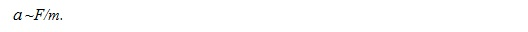
При подходящ избор на мерните единици за маса и сила, коефициентът на пропорционалност е единица и може да се запише, че
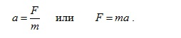
Тъй като силата създава ускорение по посока на нейното действие, записът на (2.2) във векторен вид е
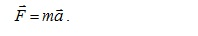
Формула (3) изразява втория принцип на динамиката (принцип на Нютон). Този принцип свързва движението на телата с причините, които го предизвикват. Мерната единица за сила е нютон (N). Един нютон е силата, която, действайки на тяло с маса един килограм, му придава ускорение един метър за секунда на квадрат – 1N = 1 kg.1 m/s2. Зависимостта (3) се нарича също основно уравнение на движението на материална точка.
-
Принцип на суперпозицията
Ако на едно тяло действат няколко сили , тяхното общо действие може да се замени с действието на една сила , наречена равнодействаща. Нейната големина и посока се определят като векторна сума от всички сили, действащи на тялото (фиг. 1). Това правило е известно като принцип на суперпозицията на силите.
При действие на повече от една сила върху дадено тяло неговото ускорение се определя от (3), като силата се замества с равнодействащата сила.
Трети принцип на динамиката
Телата от фиг. 2. си взаимодействат, като тяло 1 действа върху тяло 2 със сила , насочена надясно. Опитите показват, че тяло 2 винаги действа на първото тяло със същата по големина сила, но обратна по посока
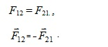
Векторното равенство (4) изразява третия принцип на динамиката, а именно, че всяко действие има равно по големина и противоположно по посока противодействие, и също както втория принцип, е валидно само спрямо инерциални отправни системи.
Силите на действие и противодействие винаги възникват и изчезват едновременно и лежат на една права линия. Те не се уравновесяват, защото са приложени към различни тела.
Конкретно следствие от третия принцип е възникването на сила, наречена реакция на опората. Когато тяло с маса m е в контакт с някаква опора (фиг. 3), то ѝ действа със сила на нормалния натиск . В резултат на това действие опората противодейства на тялото със същата по големина сила, но в обратна посока. Това е силата на реакция на опората . В случая на хоризонтална опора от (4) се получава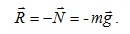
Друга разновидност на силата на реакция на опората са силите на опън. При окачване на тяло с маса m на нишка (въже), то ѝ действа със силата си на тежестта, а тя му противодейства със сила на опън (фиг. 4).
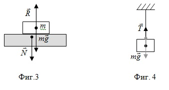
Импулс. Закон за запазване на импулса
- Импулс
Импулсът на дадено тяло e векторна величина, която е равна на произведението от неговата маса и скоростта му
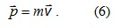
Посоките на импулса и скоростта са еднакви, защото масата винаги е положителна. Мерната единица за импулс е kg.m/s. От (6) следва, че при промяна на скоростта се променя и импулсът на тялото
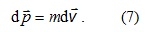
Движението с променлива скорост предполага наличие на ускорение, а телата се ускоряват, когато им действат сили. Следователно съществува връзка между действащата на тялото сила и промяната на импулса му. Уравнение (7) може да се запише във вида
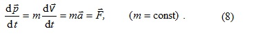
От (8) следва, че ако силата действа за време dt, то импулсът ще се измени по посока на действащата сила с величината
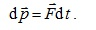
Произведението от дясната страна на това равенство се нарича импулс на силата. Импулсът на силата определя начините, по които може да се промени импулсът на едно тяло. По-голямо изменение на скоростта на едно тяло и съответно на импулса му може да се постигне или с по-продължително действие на малка сила или с по-голяма, но краткодействаща сила. При стрелковите оръжия, например по-голяма далекобойност се постига чрез по-дълга цев. Силата на барутните газове действа по-продължително време на куршума и той се изстрелва с по-голяма скорост, без да е необходимо да се увеличава количеството на барута в патрона.
- Закон за изменение на импулса на система от материални точки
Съвкупността от материални точки или тела, разглеждани като едно цяло, се нарича механична система. Нека една механична система съдържа n на брой материални точки с маси m1, m2, …, mn и скорости , , …, . Импулсът на i-тата материална точка е
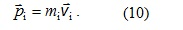
На всяка точка от системата могат да действат вътрешни и външни сили. Вътрешни са силите на взаимодействие между материалните точки от системата. Външни са силите на взаимодействие с телата извън системата.
Една механична система се нарича затворена, ако върху телата от нея действат само вътрешни сили, и отворена, когато телата от системата взаимодействат с външни за нея тела.
От (8) за всяка материална точка от системата може да се запише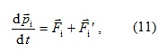
където Fi е сумата от всички вътрешни сили, които действат на i-тата материална точка, а е сумата от всички външни сили, действащи върху нея. Това равенство може да се сумира за всички материални точки на системата
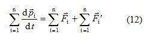
или
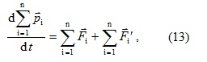
където
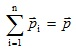
е общият импулс на системата.
Тъй като всяка една вътрешна сила в системата поражда същото по големина противодействие, то сумата от вътрешните сили винаги е нула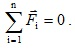
Така за изменението на общия импулс на механичната система се получава
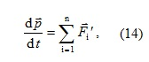
т.е. скоростта на изменение на импулса на система от материални точки е равна на сумата от външните сили, действащи на системата. Уравнение (14) изразява закона за изменение на импулса и показва, че импулсът на системата може да се променя само под действието на външни сили.
Ако механичната система е затворена, то на нея не ѝ действат външни сили и следователно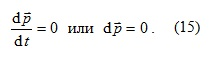
© ROGACHEV